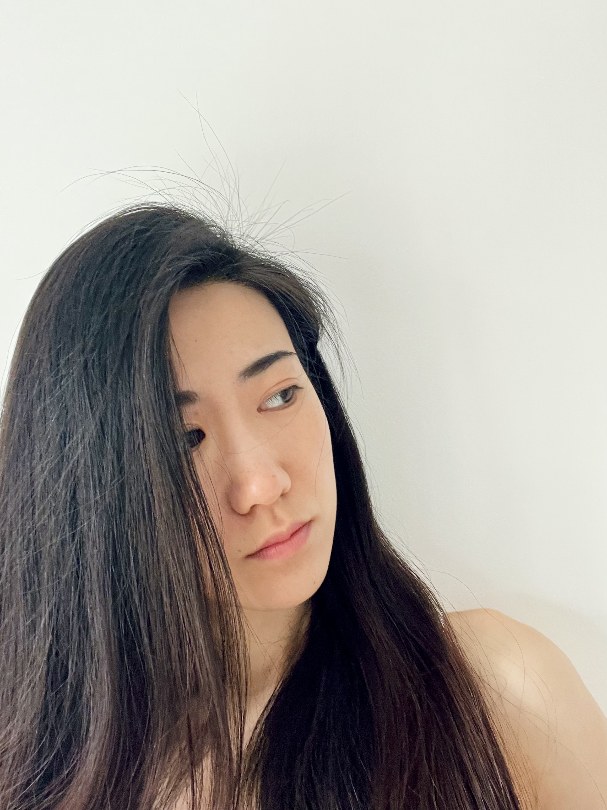

< Creative Developer >
Hi, my name is Shi Linxi, or Lin.
I'm a full-stack developer based in Manchester UK.
employment
2021 to 2023:
The Lowry, Programme Administrator
academic background
2020 to 2021:
MA (Hons) Curating Contemporary Design (in partnership with The Design Museum)
Kingston University
2017 to 2020:
BA (Hons) Design for Theatre, Film and Performance
University for the Creative Arts
2013 to 2017:
BA (Hons) Film & TV Cinematography and Production
Communication University of Zhejiang